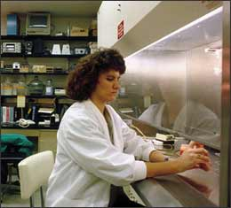

Introduction
To start your investigation, you will take on the role of a cytogeneticist and work through the steps involved in preparing mammalian cells for cytogenetic analysis. Begin by studying the photo below, which shows a cytogeneticist at work. Scroll down to learn more about what a cytogeneticist does.

Background
Cytogenetics is the study of the structure and function of chromosomes. A cytogeneticist in a clinical laboratory cultures cells from human tissues, prepares chromosomes for analysis, and studies the chromosomes to look for abnormalities. Chromosomes can be prepared from any cells that contain nuclei and will grow successfully in laboratory culture. To study the chromosomes, the cytogeneticist will usually prepare karyotypes and view cells through the microscope. With these techniques, it is possible to discover abnormalities in chromosome structure, such as deletions, translocations, and inversions, as well as errors in chromosome number, such as trisomy 21.
Cytogenetic techniques can also be used to study chromosomal abnormalities in cancer cells. For example, some cancer cells have extra chromosomes, missing chromosomes, or chromosomes that have pieces missing. Unlike normal human cells, which cease to divide in laboratory culture after a limited number of cell divisions, many types of cancer cells can continue to divide as long as nutrients are provided. The cells you will use in this investigation are from a human cell culture that has been grown in laboratories for more than 50 years. These cells are descended from a cell sample taken from a woman named Henrietta Lacks who died of cancer in 1951. The cells are called "HeLa" cells after her.